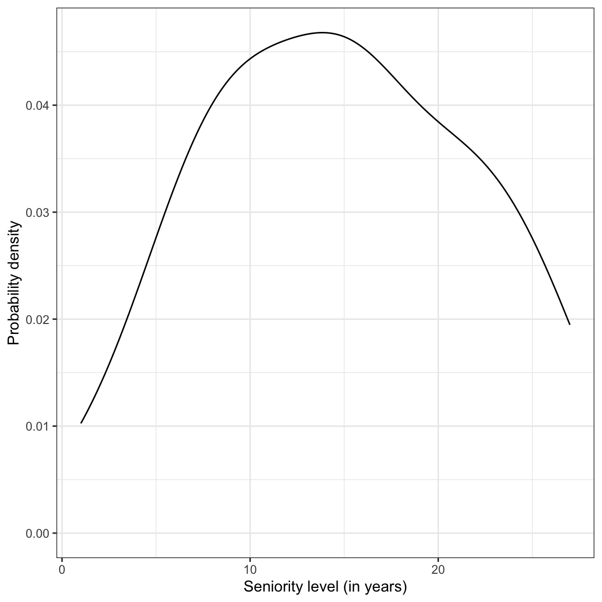
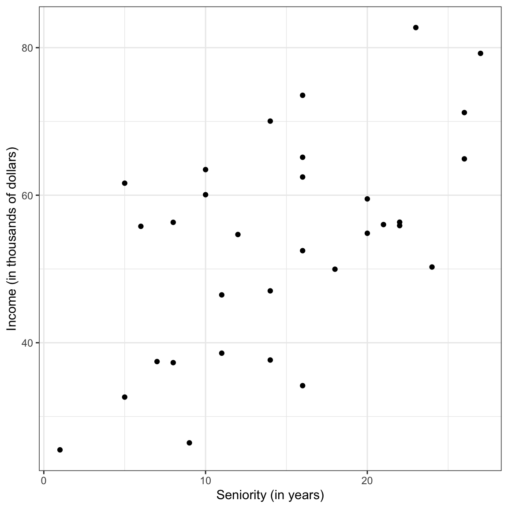
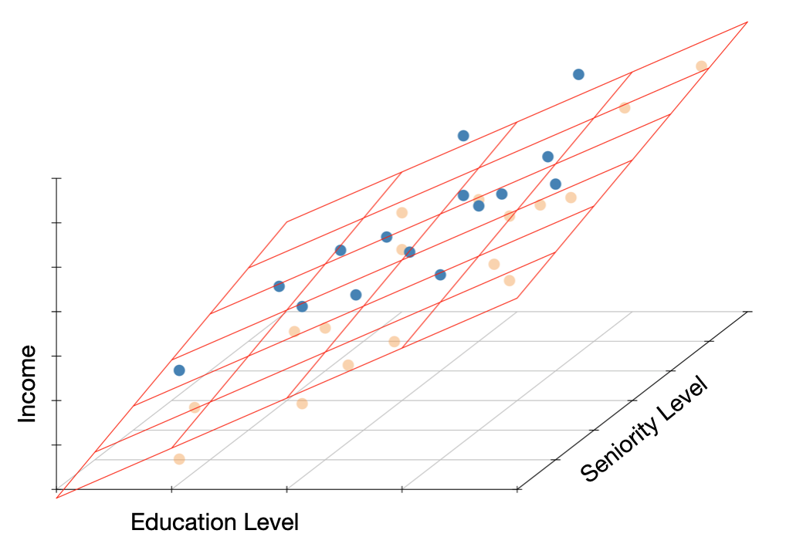
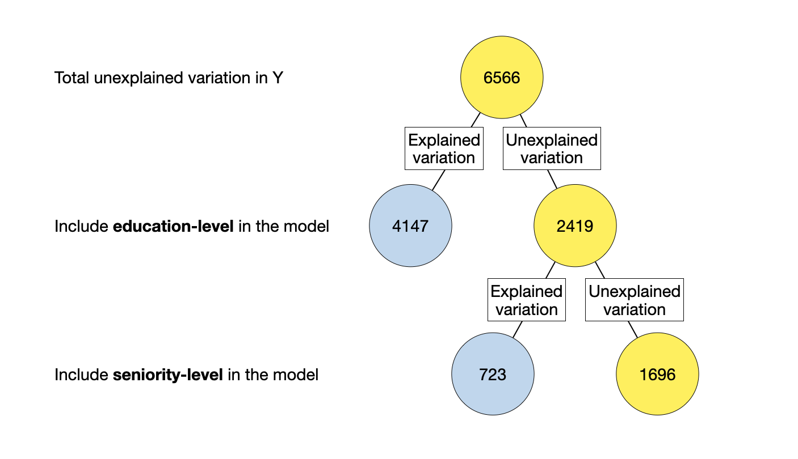
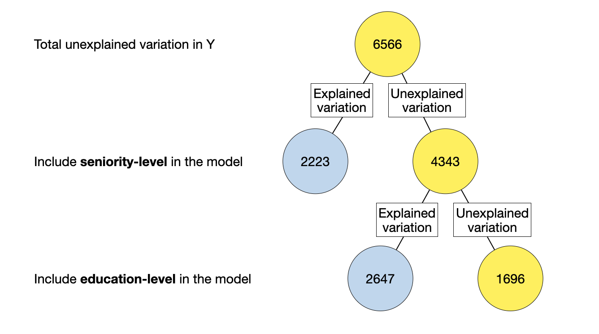
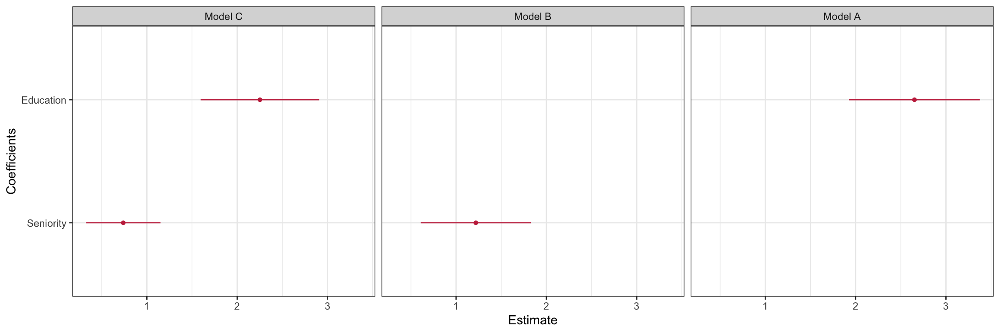

# Load libraries
library(broom)
library(corrr)
library(dplyr)
library(ggplot2)
library(readr)
# Import data
city = read_csv(file = "https://raw.githubusercontent.com/zief0002/modeling/main/data/riverview.csv")
# View data
city11 Introduction to Multiple Regression
In this chapter, you will learn about including multiple predictors into the regression model. To do so, we will use the riverview.csv data to examine whether education level is related to income. The data contain five attributes collected from a random sample of \(n=32\) employees working for the city of Riverview, a hypothetical midwestern city (see the data codebook). To begin, we will load several libraries and import the data into an object called city.
11.1 Observational Data and Alternative Explanations
In a previous chapter, we fitted a model regressing employees’ incomes on education level. We will do that again, but now we will also evaluate the inferential evidence around the effect of education on incomes.
# Fit regression model
lm.a = lm(income ~ 1 + education, data = city)
# Obtain model-level results
glance(lm.a)# A tibble: 1 × 12
r.squared adj.r.squared sigma statistic p.value df logLik AIC BIC
<dbl> <dbl> <dbl> <dbl> <dbl> <dbl> <dbl> <dbl> <dbl>
1 0.632 0.619 8.98 51.5 0.0000000556 1 -115. 235. 240.
deviance df.residual nobs
<dbl> <int> <int>
1 2418. 30 32# Obtain coefficient-level results
tidy(lm.a)The fitted equation,
\[ \hat{\mathrm{Income}_i} = 11.321 + 2.651(\mathrm{Education~Level}_i), \]
suggests that the estimated mean income for employees with education levels that differ by one year varies by 2.651 thousand dollars, on average. We also found that differences in education level explained 63.2% of the variation in income, and that the empirical evidence is inconsistent with the hypothesis that education level explains none of the variation in incomes (\(p<.001\)). All this suggests that education level is likely related to income.
If the data had been collected as part of an experiment where we could have randomly assigned cases in our sample to the different levels of education (i.e., different values of X), the analysis would be done and we could conclude that education has a positive effect on income. Unfortunately, the data we used in the analysis is observational—we did not assign levels of the predictor to the cases in the sample. This means there could be other variables that are correlated with the predictor that are influencing the effect we saw in the data.
For example, we know that in civil service jobs, pay is influenced by seniority. So, one question is whether the distribution of seniority is similar across employees with different education levels. If not, it may be that those employees with higher education levels have higher levels of seniority. If that is the case, perhaps some (or all) of the positive effect of education on income that we observed is really just a function of higher seniority. To determine whether this is the case, we need to include seniority as another predictor in the model along with education level and see whether there is still an effect of education on income.
11.2 Examining the Seniority Predictor
Before we begin modeling, it behooves us to explore the seniority predictor. Below we examine the marginal distribution of seniority for the 32 employees in the sample.
# Examine the marginal distribution
ggplot(data = city, aes(x = seniority)) +
stat_density(geom = "line") +
theme_bw() +
xlab("Seniority level (in years)") +
ylab("Probability density")
We also compute numerical summaries of the distribution.
# Compute mean and standard deviation
city |>
summarize(
M = mean(seniority),
SD = sd(seniority)
)Seniority is symmetric with a typical employee having roughly 15 years of seniority. There is quite a lot of variation in seniority, with most employees having between 8 and 22 years of seniority.
After we examine the marginal distribution, we should examine the relationships among all of the three variables we are considering in the analysis. Typically researchers will examine the scatterplot between each predictor and the outcome (to evaluate the functional forms of the relationships with the outcome) and also examine the correlation matrix. Since we have already looked at the scatterplot between education-level and income, we focus here on the relationship between seniority and income.
# Relationship between income and seniority
ggplot(data = city, aes(x = seniority, y = income)) +
geom_point() +
theme_bw() +
xlab("Seniority (in years)") +
ylab("Income (in thousands of dollars)")
The correlation matrix between all three variables is also examined.
# Correlation matrix
city |>
select(income, education, seniority) |>
correlate()The relationship between seniority and income seems linear and positive (\(r=0.58\)). This suggests that employees with more seniority also tend to have higher incomes. Education level and seniority are also modestly correlated (\(r=0.34\)), indicating that employees with higher education levels tend to also have more seniority.
Because there is a positive correlation between seniority and income in the sample, it suggests that city employees with more seniority level tend to have higher incomes. The correlation between the two predictors (education level and seniority) is also positive suggesting that city employees with higher education levels tend to have more seniority.
11.2.1 Simple Regression Model: Seniority as a Predictor of Income
It is also instructive to fit and examine the results from the simple regression model using seniority as a predictor of variation in income.
lm.b = lm(income ~ 1 + seniority, data = city)
# Model-level results
glance(lm.b)# A tibble: 1 × 12
r.squared adj.r.squared sigma statistic p.value df logLik AIC BIC
<dbl> <dbl> <dbl> <dbl> <dbl> <dbl> <dbl> <dbl> <dbl>
1 0.339 0.317 12.0 15.4 0.000477 1 -124. 254. 258.
deviance df.residual nobs
<dbl> <int> <int>
1 4342. 30 32# Coefficient-level results
tidy(lm.b)The fitted equation,
\[ \hat{\mathrm{Income}_i} = 35.690 + 1.219(\mathrm{Seniority~Level}_i) \]
suggests that the estimated mean income for employees with seniority levels that differ by one year varies by 1.219 thousand dollars. We also find that differences in seniority level explain 33.9% of the variation in income, and that this empirical evidence is inconsistent with the hypothesis that seniority explains none of the variation in incomes (\(p<.001\)).
Our research question is focused on examining the relationship between education level and income. The relationships observed in this correlation matrix are consistent with the issues we were concerned about earlier, namely that the positive effect of education level on income may be due to the fact that employees with higher education levels have more seniority. And, the positive relationship between seniority and income is clouding the “real” underlying relationship between education and income.
What we need to know in order to determine the effect of education on incomes is whether after we account for any distributional differences in seniority across education level is there is still a relationship between education level and income. To answer this question, we will fit a model that includes both predictors.
11.3 Multiple Regression Model: Education Level and Seniority as a Predictors of Income
To fit the multiple regression model, we will just add (literally) additional predictors to the right-hand side of the lm() formula.
# Fit multiple regression model
lm.c = lm(income ~ 1 + education + seniority, data = city)11.3.1 Model-Level Results
To interpret multiple regression results, begin with the model-level information.
# Model-level results
glance(lm.c)# A tibble: 1 × 12
r.squared adj.r.squared sigma statistic p.value df logLik AIC BIC
<dbl> <dbl> <dbl> <dbl> <dbl> <dbl> <dbl> <dbl> <dbl>
1 0.742 0.724 7.65 41.7 0.00000000298 2 -109. 226. 232.
deviance df.residual nobs
<dbl> <int> <int>
1 1695. 29 32In a multiple regression model there are multiple predictors that are being used to explain variation in the outcome variable. We can begin by examining the \(R^2\) value from the output. Interpreting this value, we say:
Differences in education level AND seniority explain 74.2% of the variation in income, in the sample.
The model-level test allows us to evaluate whether, together, these predictors explain variation in the outcome or whether any explained variation in the sample is attributable to sampling error. The formal model-level null hypothesis that tests this can be written mathematically as,
\[ H_0:\rho^2 = 0. \]
This is a test of whether all the predictors together explain variation in the outcome variable. The results of this test, \(F(2,29)=41.65\), \(p<.001\), suggest that the empirical evidence is inconsistent with the null hypothesis; it is likely that together education level and seniority level do explain variation in the population.
Equivalently, we can also write the model null hypothesis as a function of the predictor effects, namely,
\[ H_0:\beta_{\mathrm{Education~Level}} = \beta_{\mathrm{Seniority}} = 0. \]
In plain English, this is akin to stating that there is NO EFFECT for every predictor included in the model. If the empirical data are inconsistent with this null hypothesis, it suggests that AT LEAST ONE of the predictor effects is likely not zero.
Although the two expressions of the model-level null hypothesis look quite different, they are answering the same question, namely whether the model predicts more variation in income than is attributable to sampling variation. Based on the results of the model-level hypothesis test we believe there is an effect of education-level on income, an effect of seniority on income, OR there is an effect of both predictors on income. The model-level results, however, do not allow us to determine which of the predictors has an effect on the outcome variable. For that we need to evaluate the coefficient-level results.
11.3.2 Coefficient-Level Results
Now we turn to the coefficient-level results produced in the tidy() output.
# Coefficient-level results
tidy(lm.c)First we will write the fitted multiple regression equation,
\[ \hat{\mathrm{Income}_i} = 6.769 + 2.252(\mathrm{Education~Level}_i) + .739(\mathrm{Seniority~Level}_i) \]
The slopes (of which there are now more than one) are referred to as partial regression slopes or partial effects. They represent the effect of the predictor AFTER accounting for the effects of the other predictors included in the model. For example,
- The partial effect of education level is 2.252. This indicates that a one year difference in education level is associated with a 2.252 thousand dollar difference in income (on average), after accounting for differences in seniority level.
- The partial effect of seniority is 0.739. This indicates that a one year difference in seniority level is associated with a 0.739 thousand dollar difference in income (on average), after accounting for differences in education level.
The language “after accounting for” is not ubiquitous in interpreting partial regression coefficients. Some researchers instead use “controlling for”, “holding constant”, or “partialling out the effects of”. For example, the education effect could also be interpreted these ways:
A one year difference in education level is associated with a 2.252 thousand dollar difference in income (on average), after controlling for differences in seniority.
A one year difference in education level is associated with a 2.252 thousand dollar difference in income (on average), after holding the effect of seniority constant.
A one year difference in education level is associated with a 2.252 thousand dollar difference in income (on average), after partialling out the effect of seniority.
Lastly, we can also interpret the intercept:
The average income for all employees with 0 years of education AND 0 years of seniority is estimated to be 6.769 thousand dollars.
This is the predicted average Y value when ALL the predictors have a value of 0. As such, it is often an extrapolated prediction and is not of interest to most applied researchers. For example, in our data, education level ranges from 8 to 24 years and seniority level ranges from 1 to 27 years. We have no data that has a zero value for either predictor, let alone for both. This makes prediction of the average Y value tenuous at these X values.
11.3.3 Coefficient-Level Inference
At the coefficient-level, the hypotheses being tested are about each individual predictor. The mathematical expression of the hypothesis is
\[ H_0: \beta_k = 0. \]
In plain English, the statistical null hypothesis states: After accounting for ALL the other predictors included in the model, there is NO EFFECT of X on Y. These hypotheses are evaluated using a t-test. For example, consider the test associated with the education level coefficient.
\[ H_0: \beta_{\mathrm{Education~Level}} = 0 \]
This is akin to stating there is NO EFFECT of education level on income after accounting for differences in seniority level. The empirical evidence is inconsistent with this hypothesis, \(t(29)=6.73\), \(p<.001\), suggesting that there is likely an effect of education on income after controlling for differences in seniority level. (Note that the df for the t-test for all of the coefficient tests is equivalent to the error, or denominator, df for the model-level F-test.)
It is important to note that the p-value at the model-level is different from any of the coefficient-level p-values. This is because when we include more than one predictor in a model, the hypotheses being tested at the model- and coefficient-levels are different. The model-level test is a simultaneous test of all the predictor effects, while the coefficient-level tests are testing the added effect of a particular predictor.
11.4 Multiple Regression: Statistical Model
The multiple regression model says that each case’s outcome (Y) is a function of two or more predictors (\(X_1\), \(X_2\), , \(X_k\)) and some amount of error. Mathematically it can be written as
\[ Y_i = \beta_0 + \beta_1(X1_{i}) + \beta_2(X2_{i}) + \ldots + \beta_k(Xk_{i}) + \epsilon_i \]
As with simple regression we are interested in estimating the values for each of the regression coefficients, namely, \(\beta_0\), \(\beta_1\), \(\beta_2\), …, \(\beta_k\). To do this, we again employ least squares estimation to minimize the sum of the squared error terms.
Since we have more than one X term in the fitted equation, the structural part of the model no longer mathematically defines a line. For example, the fitted equation from earlier,
\[ \hat{Y_i} = 6.769 + 2.252(X1_i) + 0.739(X2_i), \]
mathematically defines a regression plane. (Note we have three dimensions, Y, \(X1\), and \(X2\). If we add predictors, we have four or more dimensions and we describe a hyperplane.)
The data and regression plane defined by the education level, seniority level, and income for the Riverview employees is shown below. The regression plane is tilted up in both the education level direction (corresponding to a positive partial slope of education) and in the seniority level direction (corresponding to a positive partial slope of seniority). The blue points are above the plane (employees with a positive residual) and the yellow points are below the plane (employees with a negative residual).

Graphically, the residuals from this model are the vertical distance between the observed points and the regression plane. Mathematically, they can be computed as,
\[ \hat{\epsilon_i} = Y_i - \hat{Y_i} \]
11.5 ANOVA Decomposition
As with the simple regression model, we are interested in whether the model explains any of the unexplained variation identified in the baseline intercept-only model. As a reminder, we quantify the amount of unexplained variation through the residual sum of squares,
\[ \mathrm{SS}_{\mathrm{Residuals}} = \sum \hat{\epsilon_i}^2 \]
The residual sum of squares can be obtained using the anova() function.
# Obtain ANOVA decomposition
anova(lm.c)Here the \(\mathrm{SS}_{\mathrm{Residuals}} = 1695\). Because the model was fitted with OLS, any other plane defined with the predictors of education and seniority level; (i.e., different coefficient values for the intercept and predictors) would produce a higher sum of squared residuals value. Comparing the squared sum of residual from this model to that from the intercept-only model (\(\mathrm{SS}_{\mathrm{Residuals}} = 6566\)), we find that there is less unexplained variation after including education and seniority level in the model. Here is the partitioning of the variation in income.
\[ \underbrace{6566}_{\substack{\text{Total} \\ \text{Variation}}} = \underbrace{4871}_{\substack{\text{Explained} \\ \text{Variation}}} + \underbrace{1695}_{\substack{\text{Unexplained} \\ \text{Variation}}} \]
Dividing each term in the partitioning by the total sum of squares,
\[ \begin{split} \frac{6566}{6566} &= \frac{4871}{6566} + \frac{1695}{6566} \\[2ex] 1 &= 0.742 + 0.258 \end{split} \]
The proportion of variance explained by the model is the same as the \(R^2\) value we obtained from the glance() function. We can also obtain the model sum of squares (4871) by adding the sum of squared term for the education predictor (4147) and that for the seniority predictor (723) from the anova() output. The total sum of squared (6566) can be computed by summing all the sum of squared terms in the anova() output:
\[ 4147.3 + 722.9 + 1695.3 = 6565.5 \]
which is within rounding error of 6566.
Note that the output from anova() also partitions the df among the predictor terms and the residuals. Each predictor has 1 df associated with it, which gives the model 2 df. The residuals have 29 df associated with them. The model and residual df are the df used in the F-test and given in the glance() output. The total df in the data are \(2+29 = 31\), which is \(n-1\). Lastly, we point out that the residual df value from the anova() output (29) is the df associated with the t-tests for the coefficient-level tests (presented earlier).
11.5.1 Hypotheses Tested in the ANOVA Output
The F-values given in the anova() output do not match the F-test given in the glance() output. This is because the hypotheses being tested in the anova() output are different than that being tested in the glance() output. To understand the tests that are being performed, we need to understand how the variation is being partitioned in the model we fitted. The order the predictors in the anova() output (which is connected to the order they were included in the lm() function) shows this partitioning numerically. We can also create a diagram that shows this partitioning.

In the diagram, the total unexplained variation is first explained by including education-level in the model (the first predictor included in the lm() function). This predictor explains some variation and leaves some of the variation unexplained. Then, seniority-level is allowed to explain any residual (unexplained) variation that remains.
The hypothesis that is being tested by an F-test is whether the explained variation is more than we expect because of sampling error. The way we quantify this is to compute \(R^2\) which is a ratio of the explained variation to the total variation the predictor(s) is allowed to explain. The key here is that the numerator and denominator for \(R^2\) are different depending on what is being tested.
Consider the F-test at the model-level from the glance() output. This is testing whether the model-level \(R^2\) is more than we expect because of sampling error. In the diagram, the explained variation in the model-level \(R^2\) is the total sum of all the blue circles since the model includes both education-level and seniority-level. The denominator is the baseline unexplained variation. Mathematically,
\[ \begin{split} R^2_{\mathrm{Model}} &= \frac{4147 + 723}{6566} \\[2ex] &= \frac{4879}{6566} \end{split} \]
This F-test examines whether this fraction (or proportion) is statistically different than 0. Here the results are those given in glance(), namely, \(F(2,29)=41.65\), \(p<.001\).
In the anova() output, results from two different F-tests are presented. The F-test in the first line of this output is associated with the education-level predictor. This is testing whether education-level (by itself) explains variation in the outcome given the model fitted. In the diagram, the explained variation for the education-level \(R^2\) is the blue circles associated with adding education to the model first. The denominator is the unexplained variation if we only consider the education and residual variation. Mathematically,
\[ \begin{split} R^2_{\mathrm{Education\mbox{-}Level}} &= \frac{4147}{4147 + 1695} \\[2ex] &= 0.710 \end{split} \]
The F-test examines whether this fraction (or proportion) is statistically different than 0. Here the results are those given in the first line of the anova() output, namely, \(F(1,29)=70.94\), \(p<.001\). The numerator df for the F-test is given in the Df column of the anova() output and the denominator df is the model’s residual df.
The F-test in the second line of this output is associated with the seniority-level predictor. This is testing whether seniority-level explains variation in the outcome AFTER education-level has already been allowed to explain any unexplained variation. In the diagram, the explained variation for the seniority-level \(R^2\) is the blue circle associated with adding seniority-level to the model. The denominator is the unexplained variation that remains after education-level has explained all the variation it can (this is no longer the baseline unexplained variation). Mathematically,
\[ \begin{split} R^2_{\mathrm{Seniority\mbox{-}Level} \vert \mathrm{Education\mbox{-}Level}} &= \frac{723}{723 + 1695} \\[2ex] &= 0.299 \end{split} \]
This F-test examines whether this fraction (or proportion) is statistically different than 0. Here the results are those given in the second line of the anova() output, namely, \(F(1,29)=12.37\), \(p=.001\).
This second test is asking whether there is an effect of seniority-level after accounting for education-level given the model fitted. This is equivalent to the hypothesis we tested for seniority-level in the coefficient-level output. In fact, the p-value from the tidy() output for the seniority-level effect is equivalent to the p-value associated with the seniority-level in the second line of the anova() output.
11.5.2 Changing the Order of the Predictors
Let’s re-fit the model, but this time we will include seniority-level in the model first and education-level second.
# Fit model with different predictor order
lm.d = lm(income ~ 1 + seniority + education, data = city)
# ANOVA decomposition
anova(lm.d)Examining the ANOVA decomposition, we see that some of the values in the table are the same and others are different. To understand why, we will again compose the partitioning diagram.

Consider the model-level F-test which tests whether the model-level \(R^2\) is more than we expect because of sampling error. In the diagram, the explained variation in the model-level \(R^2\) is the total sum of all the blue circles since the model includes both education-level and seniority-level. The denominator is the baseline unexplained variation. Mathematically,
\[ \begin{split} R^2_{\mathrm{Model}} &= \frac{2223 + 2647}{6566} \\[2ex] &= \frac{4879}{6566} \end{split} \]
This is the same model-level \(R^2\) value we obtained earlier. Thus the results given in glance(), namely, \(F(2,29)=41.65\), \(p<.001\) are identical regardless of the order the predictors are included in the model.
# Model-level output
glance(lm.d)The F-test in the first line of this output is associated with the seniority-level predictor. This is testing whether seniority-level (by itself) explains variation in the outcome given the model. Mathematically,
\[ \begin{split} R^2_{\mathrm{Seniority\mbox{-}Level}} =& \frac{2223}{2223+1695} \\[2ex] &= 0.567 \end{split} \]
The F-test examines whether this fraction (or proportion) is statistically different than 0. Here the results are those given in the first line of the anova() output, namely, \(F(1,29)=38.03\), \(p<.001\).
The F-test in the second line of this output is testing whether education-level explains variation in the outcome AFTER seniority-level has already been allowed to explain any unexplained variation, given the model. Mathematically,
\[ \begin{split} R^2_{\mathrm{Education\mbox{-}Level} \vert \mathrm{Seniority\mbox{-}Level}} &= \frac{2647}{2647 + 1695} \\[2ex] &= 0.610 \end{split} \]
The F-test examines whether this fraction (or proportion) is statistically different than 0. Here the results are those given in the second line of the anova() output, namely, \(F(1,29)=45.28\), \(p<.001\). This test is asking whether there is an effect of education-level after accounting for seniority-level. The p-value from this test is equivalent to the p-value associated with the education-level effect in the tidy() output.
# Coefficient-level output
tidy(lm.d)Note that the output from tidy() is also the same, regardless of predictor order. This means that whichever order you include the predictors in the model, the tests of the partial effects (does a predictor explain variation AFTER all other predictors have already explained a much variation as they can) will be the same. Additionally, the fitted equation will be the same.
11.6 Argh! Which Set of Results Should I Use?
From all these different F-tests and \(R^2\) values, we see that there are different ways of computing the amount of “variation accounted for” for any given predictor. The sum of squares for a particular predictor depends on whether we are considering it in isolation, or whether it is being considered in conjunction with other predictors. Not only that, but it also depends on the order that the predictor is included in the model! Similarly the amount of total unexplained variation depends on whether we consider all the unexplained variation in a variable, or whether we condition on a particular model.
In a regression analysis, we typically want to understand the amount of variation explained by a predictor after accounting for all the other predictors. That means, that when computing an \(R^2\) value, the numerator will be based on the sum of squares if that predictor is last in the model. Similarly, the denominator will be based on the total variation available to explain after accounting for all the other predictors. To determine this, we include the predictor of interest last in the lm() and then examine the anova() output to obtain the sums of squares for the predictor and residuals. The \(R^2\) value can then be computed based on those two values.
To evaluate whether that proportion of explained variation is more than we expect because of chance, we can evaluate the p-value for that predictor from the tidy() output. This is equivalent to asking: Is a particular predictor statistically important after controlling for the other predictors in the model? Again, this is the same p-value you get from the anova() output if the predictor is last in thr lm().
Some statisticians and quantitative methodologists have attempted to capture some of the differences in the various ways to compute “variance accounted for” by referring to different types of sums of squares. For example, the sums of squares in the anova() output is sometimes referred to as Type 1 Sums of Squares or Sequential Sums of Squares. While these terms can be helpful, they are not universally adopted and as a result often add more confusion than they solve. It is probably best to view them as different ways of partitioning and accounting for variation, and understand that how you decide to do this has an impact on how much variation a particular predictor explains and subsequently the p-value associated with it.
11.7 Presenting Results
It is quite common for researchers to present the results of their regression analyses in table form. Different models are typically presented in different columns and predictors are presented in rows. (Because it is generally of less substantive value, the intercept is often presented in the last row.)
Note that we DO NOT INCLUDE stars to indicate “statistical significance” as is the recommendation of the American Statistical Association. (Wasserstein & Schirm, 2019)
| Predictor | Model A | Model B | Model C |
|---|---|---|---|
| Education level |
2.651 (0.370) |
2.252 (0.335) |
|
| Seniority level |
1.219 (0.311) |
0.739 (0.210) |
|
| Constant |
11.321 (6.123) |
35.690 (5.073) |
6.769 (5.373) |
| R2 | 0.632 | 0.339 | 0.742 |
| RMSE | 8.978 | 12.031 | 7.646 |
Based on the results of fitting the three models, we can now go back and answer our research questions. Do differences in education level explain variation in incomes? Based on Model A, the empirical evidence suggests the answer is yes. Is this true even after accounting for differences in seniority? The empirical evidence from Model C suggests that, again, the answer is yes. (Since it is not necessary for answering the RQ, some researchers might choose to not present the results from Model B.)
11.8 Coefficient Plot
To create a coefficient plot for a multiple regression, we will again use the dwplot() function from the {dotwhisker} package. To create coefficient plots for multiple models we need to create a data frame based on the tidy() output for each fitted model. We also need to append a column that identifies the model name in these data frames. Finally, we need to combine these data frames into a single data frame that we will use in the dwplot() function.1 Here we presented the coefficient plot for all three models. Another option would be to create this plot for only the “final” adopted model (e.g., Model C).
# Load library
library(dotwhisker)
# Create tidy() data frames with model names
mod_1 = tidy(lm.a) |>
mutate(model = "Model A")
mod_2 = tidy(lm.b) |>
mutate(model = "Model B")
mod_3 = tidy(lm.c) |>
mutate(model = "Model C")
# Combine into single data frame
all_models = rbind(mod_1, mod_2, mod_3)
# Create plot
dwplot(all_models, show_intercept = FALSE) +
theme_bw() +
scale_color_manual(name = "Model", values = c("#c62f4b", "#c62f4b", "#c62f4b")) +
scale_x_continuous(name = "Estimate") +
scale_y_discrete(name = "Coefficients", labels = c("Seniority", "Education")) +
facet_wrap(~model) +
guides(color = FALSE)
This plot shows graphically what we observed in the numerical results. There does seem to be a positive effect of education-level on employee income. After including seniority-level in the model, the effect of education-level is somewhat tempered, but it is still positive. There is, however, some uncertainty in the exact magnitude of the size of the effect as is shown in the wide 95% confidence interval for education-level in the plot.
Wasserstein, R., & Schirm, A. (2019). Moving to a world beyond \(p < .05\). Keynote presentation at the United States Conference on Teaching Statistics.
It is critical when you are changing labels on the axes that you double-check the actual
tidy()output so that you don’t erroneously mislabel the coefficients. Here for example, thetidy()output indicates that in Model C the coefficient for education level is 2.25 and the seniority coefficient is 0.739. This corresponds to what we see in the plot.↩︎